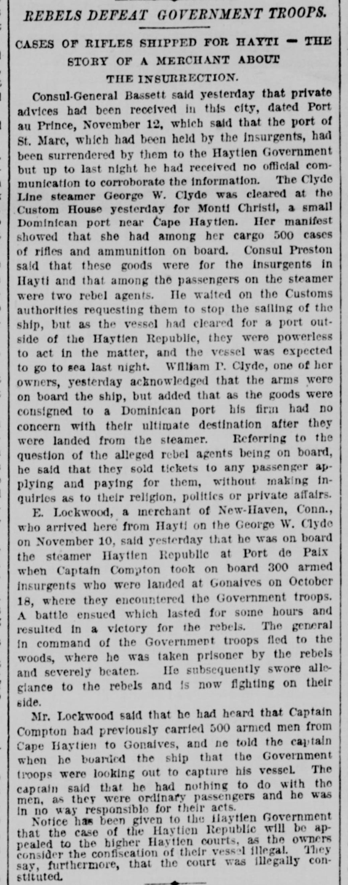
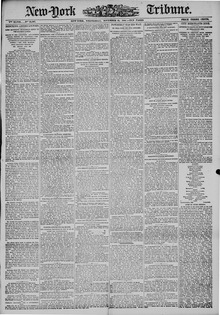

See the full pageVer la página completaReferring to the question of the alleged rebel agents being on boardRefiriéndose a la cuestión de que los presuntos agentes rebeldes se encontraran en
According to the New-York Tribune of November 21, 1888, E. Lockwood of New-Haven, Connecticut, reported that the steamer Haytien Republic, captained by Compton, transported 300 armed insurgents on October 18 who landed at Gonaives and defeated Government troops in a battle. Lockwood also stated he warned the captain about government forces seeking to capture the vessel, to which the captain replied he was not responsible for the passengers, while notice was given that the vessel's confiscation would be appealed in higher Haytien courts.Según el New-York Tribune del 21 de noviembre de 1888, E. Lockwood, de New Haven (Connecticut), refirió que el vapor Haytien Republic, capitaneado por Compton, transportó el 18 de octubre a 300 rebeldes armados que desembarcaron en Gonaïves y doblegaron en combate a las tropas del Gobierno. Manifestó asimismo Lockwood haber advertido al capitán sobre las patrullas gubernamentales que pretendían apresar el barco, a lo que el capitán replicó no tener responsabilidad sobre los pasajeros, notificándose que el comiso de la embarcación sería recurrido ante los altos tribunales haitianos.
FULL TEXT:TRADUCCIÓN:
REBELS DEFEAT GOVERNMENT TROOPS.REBELDES DERROTAN A LAS TROPAS DEL GOBIERNO.
CASES OF RIFLES SHIPPED FOR HAYTI — THE STORY OF A MERCHANT ABOUT THE INSURRECTION.CAJAS DE RIFLES EMBARCADAS PARA HAITÍ — LA HISTORIA DE UN COMERCIANTE SOBRE LA INSURRECCIÓN.
Consul-General Bassett said yesterday that private advices had been received in this city, dated Port au Prince, November 12, which said that the port of St. Marc, which had been held by the insurgents, had been surrendered by them to the Haytien Government; but up to last night he had received no official communication to corroborate the information. The Clyde Line steamer George W. Clyde was cleared at the Custom House yesterday for Monte Christi, a small Dominican port near Cape Haytien. Her manifest showed that she had among her cargo 500 cases of rifles and ammunition on board. Consul Preston said that these goods were for the insurgents in Hayti and that among the passengers on the steamer were two rebel agents. He waited on the Customs authorities requesting them to stop the sailing of the ship, but as the vessel had cleared for a port outside of the Haytien Republic, they were powerless to act in the matter, and the vessel was expected to go to sea last night. William P. Clyde, one of her owners, yesterday acknowledged that the arms were on board the ship, but added that as the goods were consigned to a Dominican port his firm had no concern with their ultimate destination after they were landed from the steamer. Referring to the question of the alleged rebel agents being on board, he said that they sold tickets to any passenger applying and paying for them, without making inquiries as to their religion, politics or private affairs.El Cónsul General Bassett dijo ayer que se habían recibido noticias privadas en esta ciudad, fechadas en Puerto Príncipe, 12 de noviembre, que decían que el puerto de St. Marc, que había estado en poder de los insurgentes, había sido entregado por ellos al Gobierno haitiano; pero hasta anoche no había recibido comunicación oficial alguna para corroborar la información. El vapor de la Línea Clyde George W. Clyde fue despachado en la Aduana ayer para Monte Cristi, un pequeño puerto dominicano cerca de Cabo Haitiano. Su manifiesto mostraba que tenía entre su carga 500 cajas de rifles y municiones a bordo. El Cónsul Preston dijo que estas mercancías eran para los insurgentes en Haití y que entre los pasajeros del vapor había dos agentes rebeldes. Visitó a las autoridades de Aduanas pidiéndoles que detuvieran la salida del buque, pero como el buque había despachado para un puerto fuera de la República haitiana, no tenían poder para actuar en el asunto, y se esperaba que el buque saliera al mar anoche. William P. Clyde, uno de sus propietarios, reconoció ayer que las armas estaban a bordo del buque, pero añadió que como las mercancías estaban consignadas a un puerto dominicano su firma no tenía preocupación por su destino final después de que fueran desembarcadas del vapor. Refiriéndose a la cuestión de los alegados agentes rebeldes a bordo, dijo que vendían boletos a cualquier pasajero que los solicitara y pagara por ellos, sin hacer indagaciones en cuanto a su religión, política o asuntos privados.
E. Lockwood, a merchant of New-Haven, Conn., who arrived here from Hayti on the George W. Clyde on November 10, said yesterday that he was on board the steamer Haytien Republic at Port de Paix when Captain Compton took on board 300 armed insurgents who were landed at Gonaives on October 18, where they encountered the Government troops. A battle ensued which lasted for some hours and resulted in a victory for the rebels. The general in command of the Government troops fled to the woods, where he was taken prisoner by the rebels and severely beaten. He subsequently swore allegiance to the rebels and is now fighting on their side.E. Lockwood, un comerciante de New-Haven, Connecticut, que llegó aquí procedente de Haití en el George W. Clyde el 10 de noviembre, dijo ayer que estaba a bordo del vapor Haytien Republic en Port de Paix cuando el capitán Compton tomó a bordo 300 insurgentes armados que fueron desembarcados en Gonaives el 18 de octubre, donde encontraron a las tropas del Gobierno. Una batalla siguió que duró algunas horas y resultó en una victoria para los rebeldes. El general al mando de las tropas del Gobierno huyó a los bosques, donde fue tomado prisionero por los rebeldes y severamente golpeado. Posteriormente juró lealtad a los rebeldes y ahora está luchando de su lado.
Mr. Lockwood said that he had heard that Captain Compton had previously carried 500 armed men from Cape Haytien to Gonaives, and he told the captain when he boarded the ship that the Government troops were looking out to capture his vessel. The captain said that he had nothing to do with the men, as they were ordinary passengers and he was in no way responsible for their acts.El Sr. Lockwood dijo que había oído que el capitán Compton había llevado anteriormente 500 hombres armados desde Cabo Haitiano a Gonaives, y le dijo al capitán cuando abordó el buque que las tropas del Gobierno estaban atentas para capturar su buque. El capitán dijo que no tenía nada que ver con los hombres, ya que eran pasajeros ordinarios y no era de ningún modo responsable por sus actos.
Notice has been given to the Haytien Government that the case of the Haytien Republic will be appealed to the higher Haytien courts, as the owners consider the confiscation of their vessel illegal. They say, furthermore, that the court was illegally constituted.Se ha dado aviso al Gobierno haitiano de que el caso de la Haytien Republic será apelado a las cortes haitianas superiores, ya que los propietarios consideran la confiscación de su buque ilegal. Dicen, además, que la corte fue constituida ilegalmente.
New-York Tribune. New York, November 21, 1888. Page 1.